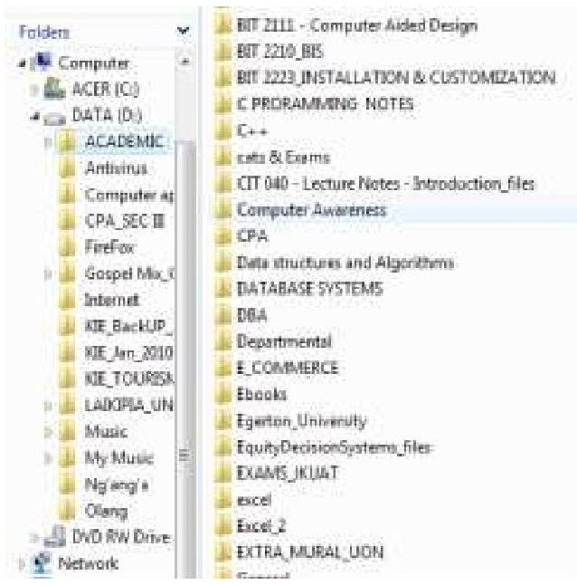
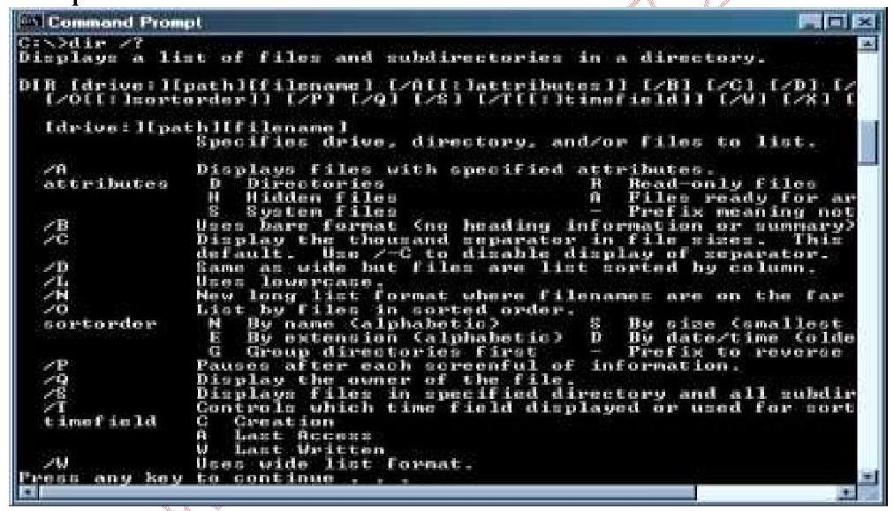
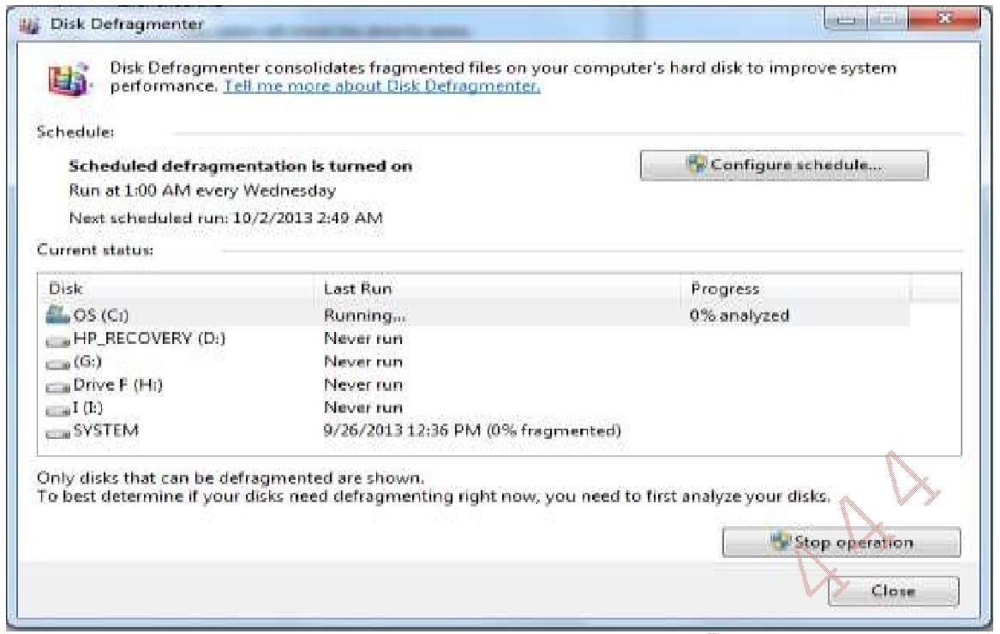
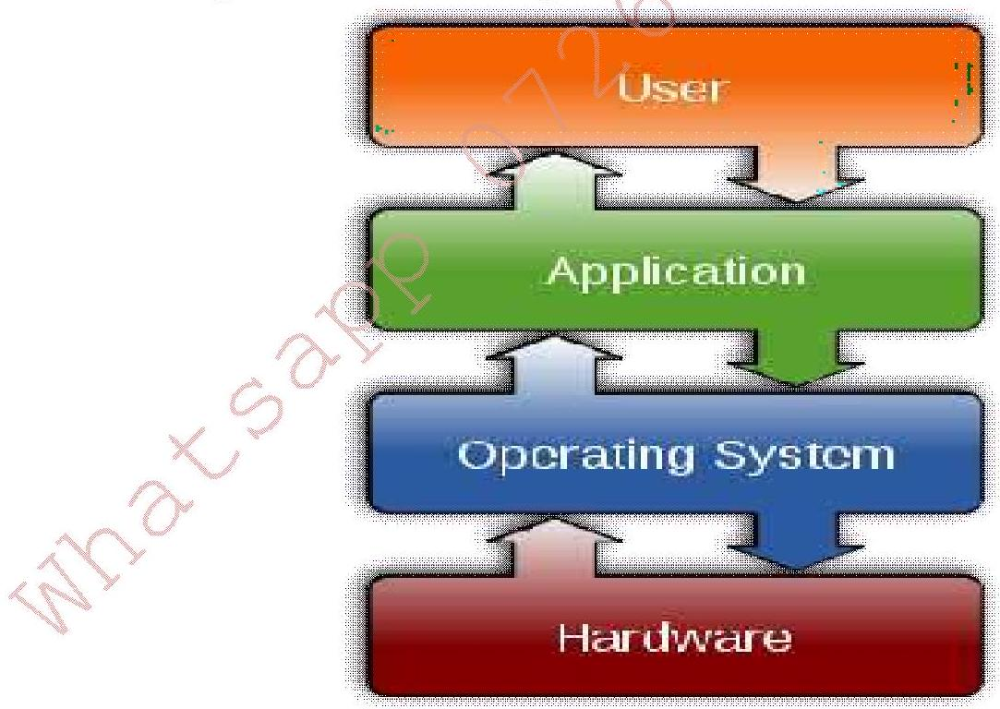
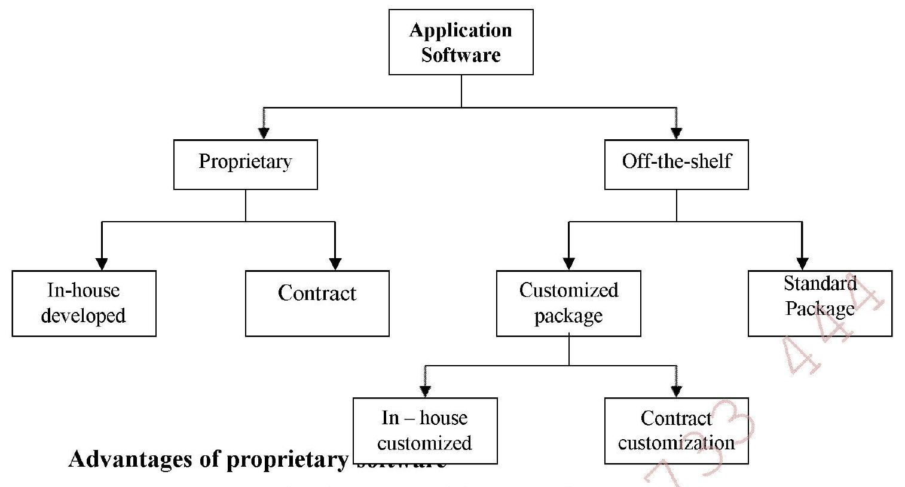

A computer software/program is a sequence of instructions (machine-readable) that tell the computer hardware what to do.
There are two major categories of software: system and application software.
⚙️SYSTEM SOFTWARE
Systems software consists of programs that co-ordinate the activities of hardware and other programs. System software is designed for a specific CPU and hardware class. The combination of a particular hardware configuration and operating system is called a computer platform. These programs manage the "behind the scenes" operation of the computer.
TYPES OF SYSTEM SOFTWARE
1.Operating systems (OS) - This is a collection of software that manages computer hardware resources and provides common services for computer programs.
Examples of operating systems include:
-DOS - Disk operating system
-Windows 3.1, 95, 98, NT, 2000, ME, XPLinux, Windows Server 2003
-Unix
-MAC OS X
-System 7/Mac OS 7
-Solaris
2.Utility Programs - This is system software designed to help the OS to analyze, configure and maintain a computer. Utility programs often come installed on computer systems or packaged with operating systems. Utilities can also be purchased individually. Examples of utility programs include:
a.Language processors - Compilers and interpreters.
b.Disk cloning software - This is software that copys the contents of one computer hard disk to another disk or to an "image" file. Unlike standard copying functions, disk cloning involves copying hidden and in-use files, and thus presents special challenges, as those types of files are typically not available for copying. Examples include Disk Copy by Apple and DriveClone by Farstone Technology.
c.Disk Compression - A type of data compression that works by storing compressed versions of files on the hard disk. A disk compression utility sits between the operating system and the disk drive. Whenever the operating system attempts to save a file to disk, the utility intercepts it and compresses it. Likewise, when the operating system attempts to open a file, the disk compression utility intercepts the file, decompresses it, and then passes it to the operating system.
d.Antivirus software
e.Backup software
f.Disk checkers for scanning operating hard drive.
g.Disk Defragmenter
h.Disk partitioning for dividing an individual drive into multiple logical drives
i.Disk Cleaner
j.Debuggers
k.Registry cleaners clean and optimize the Windows registry by removing old registry keys that are no
Types of Operating Systems
-Multi-user: Allows two or more users to run programs at the same time. Some operating systems permit hundreds or even thousands of concurrent users. All mainframes and minicomputers are multi-user systems, but most personal computers and workstations are not.
-Multiprocessing: Supports running a program on more than one CPU. The system has two or more processing units (multiple processors) each sharing the main memory and peripherals, in order to simultaneously process programs. This is also called parallel processing and is made possible by multithreading programs such that several threads of the same program run on the same CPU.
-Multitasking/Multiprogramming (vs. Singletasking): Allows more than one program to run concurrently thereby ensuring that system resources are utilized effectively. A single-tasking system has only one running program.
-Multithreading: Allows different parts of a single program to run concurrently. The technology can be applied to a single process to enable parallel execution on a multiprocessor system. This means that a single process can have many different "functions" executing concurrently, allowing the application to better use the available hardware (multiple cores/processors).
-Real time: These Operating systems respond to input instantly. They are usually dedicated, embedded systems. They typically read from and react to sensor data. The system must guarantee response to events within fixed periods of time to ensure correct performance. Real-time responses are often understood to be in the order of milliseconds, and sometimes microseconds. The predictability of the system behaviour is the most important concern in these systems. Generalpurpose operating systems, such as DOS and UNIX, are not real-time. The main characteristics of this type of real time systems include:
-Direct connection between input/output devices and the central processor.
-Fairly fast response time
Typical examples of real-time systems include Air Traffic Control Systems, Command Control Systems.
-Distributed: A distributed operating system is a system that manages a group of networked computers which have the same goal for their work. The components interact with each other in order to achieve a common goal such as solving a large computational problem. The computers are geographically dispersed but linked by communication lines. This seamless integration of individual nodes into a global system is referred to as transparency.
-Embedded: An embedded system is a computer system with a dedicated function within a larger mechanical or electrical system, often with real-time computing constraints. Embedded operating systems are designed to be used in embedded computer systems and dedicated to handle a particular task. They are designed to operate on small machines like PDAs with a limited number of resources. They are very compact and extremely efficient by design. Examples include Windows CE and Minix 3. Embedded systems range from portable devices such as digital watches and MP3 players, to large stationary installations like traffic lights, factory controllers and large complex systems like hybrid vehicles, MRI, and avionics.
-Batch operating system: these execute a series of programs ("jobs") on a computer without human interaction. Batch jobs are set up so they can be run to completion without human interaction i.e. programs and data are collected together in a batch before processing starts. This is in contrast to "online" or interactive systems which prompt the user for such input. Examples of areas where batch processing is used include:
a.Producing bills
b.payroll
c.stock control
d.processing bank cheques
e.marking multiple choice examination papers
Spooling batch systems use the concept of spooling which is an acronym for Simultaneous Peripheral Operations online. Spooling refers to putting data in a buffer, a special area in memory or on a disk where an output device such as a printer can access them when it is ready. Spooling is useful because devices access data at much slower rates than the CPU. The buffer provides a waiting station where data can rest while the slower device catches up. The most common spooling application is print spooling. In print spooling, documents are loaded into a buffer and then the printer pulls them off the buffer at its own rate.
-Interactive/on-line: User is online with computer system and interacts with it via an interface and the results of data processing are available immediately. It is typically composed of many short transactions where the result of the next transaction may be unpredictable. Response time needs to be short since the user submits and waits for the result.
Functions of an Operating System
The main features of an operating system can be thought of as functions of the operating systems. They are the qualities that an operating system should strive to achieve.
i)Managing Resources - These programs coordinate all the computer's resources including the processor, keyboard, mouse, printer, monitor, storage devices and memory.
ii)Managing file systems - An operating system creates a file structure on the computer hard drive where user data can be stored and retrieved. When a file is saved, the operating system saves it, attaches a name to it, and remembers where it put the file for future use. The way an operating system organizes information into files is called a file system. Most operating systems use a hierarchical file system, which organizes files into directories (folders) under a tree structure. The beginning of the directory system is called the root directory e.g. C:\. The figure below shows a screenshot of tree structure when using Windows Explorer.

Windows Explorer File Tree
b.Providing a user interface - Users interact with application programs and computer hardware through a user interface. The user interface controls how you enter data or instructions and how information displays on the computer screen. Almost all operating systems today provide a windows-like Graphical User Interface (GUI) in which graphic objects called icons are used to represent commonly used features. Some operating systems, however, provide a command-line user interface such as MS-DOS, CP/M, Unix, and Apple DOS. System software serves as the interface between a user, the application software, and the computer's hardware.

Screenshot of a sample MS DOS Console
iii)Running applications - These programs load and run applications such as word processors and spreadsheets. Most operating systems support multitasking, or the ability to run more than one application at a time. When a user requests a program, the operating system locates the application and loads it into the primary memory or RAM of the computer. As more programs are loaded, the operating system must allocate the computer resources.
iv)Support for built-in utility programs -The operating system uses utility programs for maintenance and repairs. Utility programs help identify problems, locate lost files, repair damaged files, and backup data. The figure here shows the progress of the Disk Defragmenter, which is found in Programs > Accessories > System Tools.

Disk Defragmenter
v)Control of the computer hardware - The operating system sits between the programs and the Basic Input Output System (BIOS). The BIOS controls the hardware. All programs that need hardware resources must go through the operating system. The operating system can either access the hardware through the BIOS or through the device drivers.

OS Interaction
vi)Security - The operating system must be capable of distinguishing between requests should be allowed to be processed, and others which should not be processed. A computer being secure depends on a number of technologies working properly. A modern operating system provides access to a number of resources, which are available to software running on the system, and to external devices like networks via the kernel.
vii)Reporting errors during program execution
📊APPLICATION SOFTWARE
Applications software includes programs designed to help end users solve particular problems using the computer or to perform specific tasks beyond the operation of the computer itself.
Sources of application software

Proprietary vs Off-the-Shelf Software
Advantages of proprietary software
-You can get exactly what you need in terms of reports, features etc.
-Being involved in development offers a further level in control over results.
-There is more flexibility in making modifications that may be required to counteract a new initiative by a competitor or to meet new supplier or customer requirements. A merger with another firm or an acquisition will also necessitate software changes to meet new business needs.
Disadvantages of proprietary software
-It can take a long time and significant resources to develop required features.
-In-house system development staff may become hard-pressed to provide the required level of ongoing support and maintenance because of pressure to get on to other new projects.
-The software makes the business owner too heavily dependent upon the developer.
-It is difficult to adapt the software to changes in the marketplace.
-It is expensive to develop.
Advantages of off-the-shelf software
-The initial cost is lower since the software firm is able to spread the development costs over a large number of customers.
-There is lower risk that the software will fail to meet the basic business needs - you can analyze existing features and performance of the package
-Package is likely to be of high quality since many customer firms have tested the software and helped identify many of its bugs.
-Due to its wide distribution you may be able to gain help from a large number of users especially online.
Disadvantages of off-the-shelf software
-An organization may have to pay for features that are not required and never used.
-The software may lack important features, thus requiring future modifications or customisation. This can be very expensive because users must adopt future releases of the software.
-Software may not match current work processes and data standards.
Application software is further classified into general-purpose software and special purpose applications. General purpose application software is a type of software that can be used for a variety of tasks. It is not limited to one particular function. For example a word processor could be classed as general purpose software as it would allow a user to write a novel, create a restaurant menu or even make a poster.
Special purpose application software, on the other hand, is a type of software created to execute one specific task. For example a camera application on your phone will only allow you to take and share pictures.
Functions of various General-purpose software
-Word processing - Create, edit and print text documents. E.g. MS Word, Word Perfect, OpenOffice Writer.
-Spreadsheets - Provide a wide range of in-built functions for statistical, logical, financial, database, graphics, data and time calculations. E.g. Lotus 1-2-3, Excel, Quattro Pro.
-Database management systems (DBMS) - Store, manipulate and retrieve data. E.g. Access, FoxPro, dBase, Oracle, MySQL etc.
-Online Information Services - Obtain a broad range of information from commercial services. E.g. America Online, CompuServe
-Communications applications- Ms Outlook for email
-Browsers e.g. Internet Explorer, Mozilla Firefox, Eudora, Netscape's Navigator, Opera Browser, Torch, Google chrome.
-Graphics - Develop graphs, illustrations and drawings. E.g. PaintShop, FreeHand, Corel Draw etc.
-Project Management - Plan, schedule, allocate and control people and resources needed to complete a project according. E.g. Project for Windows, Time Line.
-Financial Management - Provide income and expense tracking and reporting to monitor and plan budgets. E.g. Quicken, Quick-books, Sage
-Desktop publishing - Used to create high-quality printed output including text and graphics; various styles of pages can be laid out; art and text from other programs can also be integrated into published pages. E.g. PageMaker, Publisher.
-Presentation packages like MS PowerPoint, Apple Keynote, Corel Presentations Lotus Freelance Graphics, OpenOffice, NeoOffice, StarOffice Impress
Note: Some application software come in suites. A software suite refers to related but independent programs and packages that have a common user interface or shared data format, such as Microsoft Office. The programs in a software suite are designed to be used together. In addition, the commands, the icons and procedures are the same for all programs in the suite.
🤔CHOOSING APPROPRIATE COMPUTER SOFTWARE
There are six key software evaluation criteria that should be considered in an organization's software decision.
(i)Functionality - Software should have the right functionality to fit your industry specific requirements. Just because the software is well known, does not mean the vendor has the specific functionality you need to run your business.
(ii)Technology - The software must be a match for the platform and database that you are running and the expertise of the IT staff that you have in-house.
(iii)Software Vendor - The software vendor is a critical part of the software selection process. You are not just buying a static software solution; you are actually buying a relationship with that software vendor. You will be paying annual maintenance so that they will continue to develop, enhance, and improve the product.
(iv)Value Added Reseller (VAR) - If you are acquiring software from a VAR, the company needs to have experience with the software product that you are implementing and the industry that you are in. You have many VAR/Implementation Partner options available to you. Make sure you get one that has a focus in your industry. A Value Added Reseller is a company that adds features or services to an existing product and then resells it usually to end-users. The added value can come in form of integrating, customizing, consulting, training and implementation.
(v)Maintenance & Support - You can expect to pay between 18-25% of the license cost for maintenance. This entitles you to upgrades and some level of support. You should make sure that this investment you will be making on an annual basis will be appropriate.
(vi)Total Cost of Ownership - You need to consider the total cost of ownership of the software solution and not just the big discount that the vendor may be offering for the up-front license cost. There are 3 main components of out-of-pocket cost that should be considered. These components include the software license, software maintenance, and implementation services. You should look at the cost for the next 5-7 years in order to get a good idea of the long term cost to your organization.